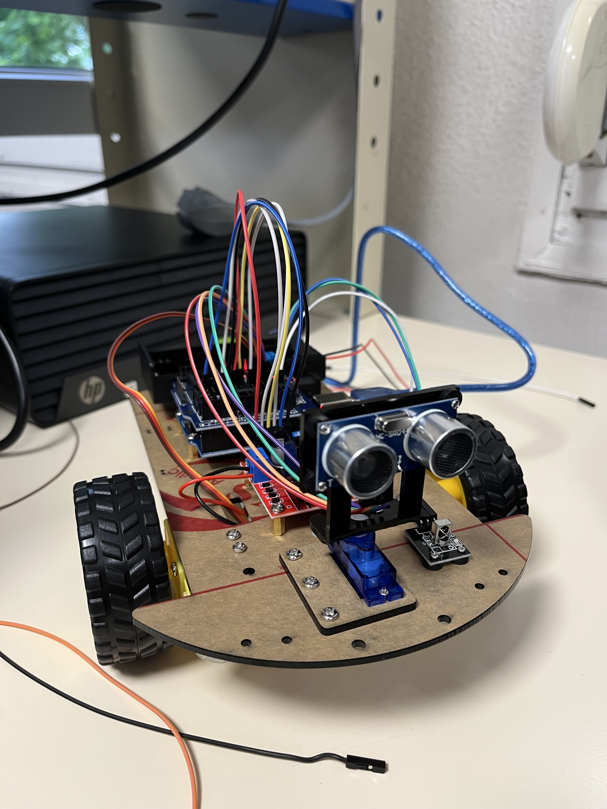

Ce projet a été réalisé en première année de BUT GEII, en groupe de trois étudiants. L’objectif principal était de concevoir un robot capable de se déplacer de deux manières : en mode automatique, où il évolue de manière autonome, et en mode manuel, contrôlé via une télécommande.
Démarche et Approche du Projet
Ce projet nous a immédiatement plongés dans une approche beaucoup plus autonome. Nous avions un objectif clair, des documents de référence et quelques ressources, mais aucune question intermédiaire pour nous orienter. Cela nous a forcés à organiser notre travail de manière indépendante.
Dès le début, j’ai pris le rôle de secrétaire du groupe, en m’occupant des documents techniques (diagramme de Gantt, cahier des charges fonctionnel, analyses fonctionnelles). Une fois cette partie terminée, j’ai rejoint mes coéquipiers sur les tests et la programmation du robot.
Développement et Difficultés Techniques
Le robot devait pouvoir fonctionner en deux modes : un mode manuel (télécommande IR) et un mode autonome (capteur à ultrasons sur servomoteur).
Après avoir testé séparément les modules, nous avons fusionné ces codes en un seul programme. Nous avons alors rencontré un problème matériel majeur : une tension très insuffisante sur les moteurs (0,1 à 0,2V), ce qui a fortement compliqué nos phases de tests.
Bilan et Compétences Acquises
Ce projet m’a permis d’acquérir de nombreuses compétences en gestion de projet, en rédaction technique, en programmation embarquée sur Arduino, et en résolution de problèmes matériels.
Compétences Développées sur ce Projet
| Compétence | Détail de la compétence | Niveau d’acquisition |
|---|---|---|
| Gestion de projet | Réalisation d'un diagramme de Gantt pour planifier et suivre l’avancement. Organisation des tâches de l'équipe. | |
| Rédaction de documents techniques | Rédaction de documents formels (cahier des charges fonctionnel, analyses) essentiels à la structuration du projet. | |
| Programmation sur Arduino | Correction, amélioration et fusion de codes en langage Arduino pour gérer les différents modules du robot. | |
| Résolution de problèmes techniques | Tests et diagnostics pour corriger des erreurs de calibration et des pannes matérielles complexes (alimentation des moteurs). |
Détails du Projet (Vidéo & Image)
Découvrez ci-dessous une démonstration du robot en action, ainsi qu'une photo de son montage final.
